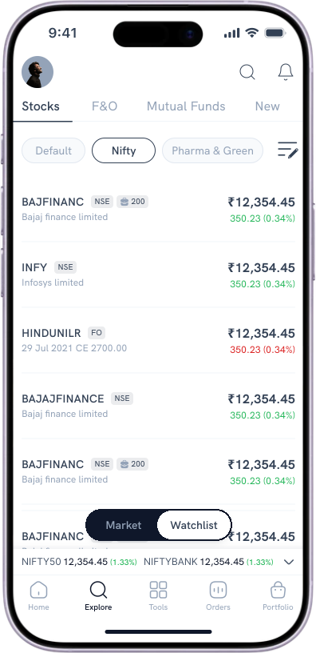
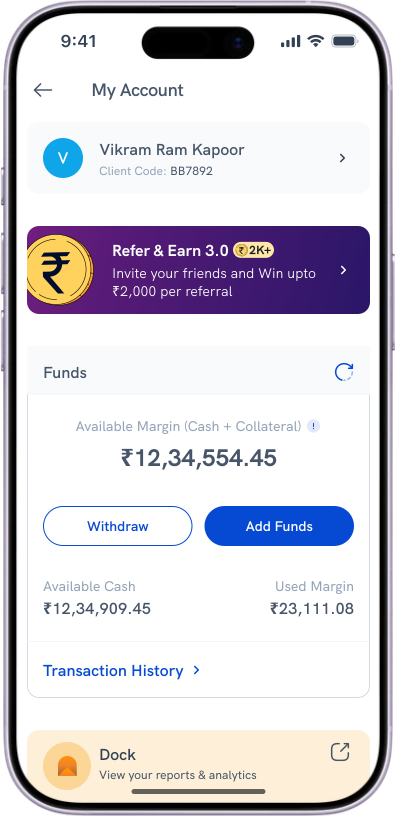

The floor is yours.
A thought, a question, something you’d have done differently. Whatever you want to say.


Two apps into one, built to hold the third
Rupeezy · Sole designer · Consumer app200K+ registered users · 97% of company revenue
Read case studyThe first product Rupeezy’s partners ever had
Rupeezy · Sole designer · B2B platform2.4× lead-to-client · 48% fewer support tickets
Read case study
An AI agent platform, concept to public launch
Runable · Founding designer · AI product~$1M run-rate in month one · 0→1 concept to launch
View liveMore case studies are being written up.
Now
Product Designer
Open to work. The problem matters more than the industry.
Dec 2025 – Apr 2026
ZZAZZ AI
Product Designer
Priced content for the post-AI web. Designed the publisher product and rebuilt the payment flow from seven steps to four.
Sep 2025 – Nov 2025
Runable AI
Founding Product Designer
Only designer, no PM. Took an AI agent platform from concept to public launch.
Feb 2024 – Aug 2025
Rupeezy
Product Designer
Owned the trading app end to end: 200K+ registered users, 97% of company revenue. Built the partner platform and the design system.
Apr 2023 – Jan 2024
Sustainability Economics.ai
UI/UX Designer
Sole designer on a net-zero carbon accounting platform. Built for banks, insurers and corporates.